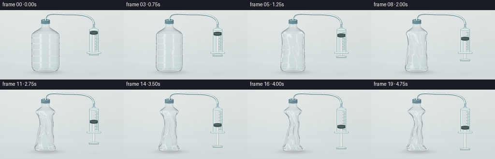
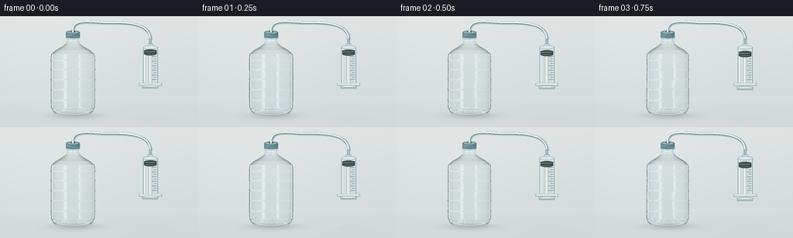

CODING AGENTS AS PIXEL WORLD MODELS
traex/GPT-6.1-Sol · phygen_016
点击播放 · 原生 RGB 像素
逐轮保存的候选
回放视频、检查图与代码变化。
每份候选均可单独播放。实际图片检查记录在下方工具轨迹中。
候选 01播放与检查图
点击播放 · 原生 RGB 像素


展开代码变化
--- 上一保存版本
+++ 本次保存版本
@@ -0,0 +1,224 @@
+from pathlib import Path
+import json
+import numpy as np
+from PIL import Image, ImageDraw, ImageFilter
+import artifact_io
+
+ROOT = Path(__file__).resolve().parent
+SPEC = json.loads((ROOT / 'task_spec.json').read_text())
+W,H = SPEC['width'], SPEC['height']
+S=3
+WW,HH=W*S,H*S
+rng=np.random.default_rng(24)
+Y,X=np.mgrid[0:HH,0:WW].astype(float)/S
+# A quiet, softly lit studio tabletop; there is no liquid in the bottle.
+grain=rng.normal(0,.30,(HH,WW))
+bg=np.zeros((HH,WW,3),float)
+for k,(a,b) in enumerate([(222,209),(227,217),(226,218)]):
+ bg[:,:,k]=a+(b-a)*Y/H + 5*np.exp(-((X-65)/110)**2-((Y-42)/90)**2)+grain
+bg += (2.2*np.exp(-((Y-107)/5)**2))[:,:,None]
+
+def overlay(im, fn):
+ layer=Image.new('RGBA',im.size)
+ d=ImageDraw.Draw(layer)
+ fn(d)
+ return Image.alpha_composite(im.convert('RGBA'),layer).convert('RGB')
+def line(d,pts,fill,width=1):
+ d.line([(round(x*S),round(y*S)) for x,y in pts],fill=fill,width=max(1,round(width*S)),joint='curve')
+def ellipse(d,box,fill,outline=None,width=1):
+ d.ellipse(tuple(round(v*S) for v in box),fill=fill,outline=outline,width=max(1,round(width*S)))
+def rect(d,box,fill,outline=None,width=1):
+ d.rectangle(tuple(round(v*S) for v in box),fill=fill,outline=outline,width=max(1,round(width*S)))
+def bezier(points,n=120):
+ p=np.array(points,float);t=np.linspace(0,1,n)[:,None]
+ return ((1-t)**3*p[0]+3*(1-t)**2*t*p[1]+3*(1-t)*t*t*p[2]+t**3*p[3]).tolist()
+def smooth(t):
+ t=np.clip(t,0,1);return t*t*(3-2*t)
+
+theta=np.linspace(-np.pi,np.pi,384,endpoint=False)
+th2=np.r_[theta,theta[0]+2*np.pi]
+
+def radius(y):
+ knots=[27,33,36,40,44,49,54,112,118,123,126]
+ vals=[7.8,8.0,9.3,15,22,27.8,28.6,28.5,28,26.0,23]
+ r=np.interp(y,knots,vals)
+ # Molded circumferential reinforcing ribs, delicate rather than opaque.
+ for h in [57,69,82,95,109,119]:
+ r+=.56*np.exp(-((y-h)/.75)**2)-.20*np.exp(-((y-h-1.25)/.6)**2)
+ return r
+
+def surface(y,c):
+ weight=smooth((y-37)/20)*(1-.65*smooth((y-111)/15))
+ # Thin PET walls develop localized dents and then collapse into deep folds.
+ wrinkle=c**1.25
+ center=94+wrinkle*weight*(2.6*np.sin((y-46)*.071)+1.0*np.sin(y*.2))
+ sx=1-.69*c*weight*(.85+.15*np.sin((y-41)*.06))
+ sz=1-.34*c*weight
+ angle=theta[None,:]
+ yy=np.asarray(y)[:,None]
+ # Diagonal creases: longitudinal dents migrate slightly as the walls buckle.
+ rot=.018*(yy-75)
+ def angular_distance(a,b):return np.arctan2(np.sin(a-b),np.cos(a-b))
+ dent1=np.exp(-(angular_distance(angle, .12+rot)/.29)**2)*np.exp(-((yy-78)/25)**2)
+ dent2=np.exp(-(angular_distance(angle,-1.06-rot*.40)/.22)**2)*np.exp(-((yy-96)/20)**2)
+ dent3=np.exp(-(angular_distance(angle,1.13-rot*.40)/.26)**2)*np.exp(-((yy-63)/17)**2)
+ folds=(.045*np.cos(6*angle+yy*.09)+.025*np.cos(11*angle-yy*.20))*wrinkle*weight[:,None]
+ rm=1-wrinkle*(.58*dent1+.27*dent2+.26*dent3)+folds
+ r=radius(y)[:,None]
+ xx=center[:,None]+r*sx[:,None]*np.sin(angle)*rm
+ zz=r*sz[:,None]*np.cos(angle)*rm
+ return xx,zz
+
+def studio(nx,ny,nz):
+ rx=2*nx*nz; ry=2*ny*nz; rz=2*nz*nz-1
+ # Reflections of two tall softboxes and a dark camera-side environment.
+ left=np.exp(-((rx+.65)/.12)**6)*np.exp(-((ry-.12)/1.20)**6)
+ right=np.exp(-((rx-.56)/.085)**6)*np.exp(-((ry+.10)/.80)**6)
+ top=np.exp(-((ry-.80)/.21)**2)*.48
+ env=np.empty((*nx.shape,3))
+ ambient=.50+.13*ry+.06*rz
+ for k,base in enumerate([164,185,191]):
+ env[...,k]=base*ambient+(left+right*.88+top)*158
+ return np.clip(env,0,255),left,right
+
+def bottle(im,c):
+ a=np.asarray(im).astype(float).copy()
+ ys=np.arange(27*S,126*S+1)/S
+ xs,zs=surface(ys,c)
+ dxdt=np.roll(xs,-1,axis=1)-np.roll(xs,1,axis=1)
+ dzdt=np.roll(zs,-1,axis=1)-np.roll(zs,1,axis=1)
+ dxdy=np.gradient(xs,ys,axis=0); dzdy=np.gradient(zs,ys,axis=0)
+ # Normals of the corrugated shell, including vertical and diagonal folds.
+ nx=dzdt; ny=dxdt*dzdy-dzdt*dxdy; nz=-dxdt
+ # Parametric theta rises clockwise: reverse outward orientation.
+ nx=-nx;ny=-ny;nz=-nz
+ ll=np.sqrt(nx*nx+ny*ny+nz*nz)
+ nx/=ll;ny/=ll;nz/=ll
+ screen_x=np.arange(WW)/S
+ for j,y in enumerate(ys):
+ row=round(y*S)
+ x1=xs[j];x2=np.roll(x1,-1);z1=zs[j];z2=np.roll(z1,-1)
+ lo=max(0,int(np.floor(x1.min()*S)));hi=min(WW,int(np.ceil(x1.max()*S))+1)
+ xp=screen_x[lo:hi,None]
+ denom=x2-x1
+ u=(xp-x1[None,:])/np.where(abs(denom)<1e-10,1e-10,denom)[None,:]
+ valid=(u>=0)&(u<=1)
+ zz=z1[None,:]+u*(z2-z1)[None,:]
+ zfront=np.where(valid,zz,-1e5)
+ zback=np.where(valid,zz,1e5)
+ fi=np.argmax(zfront,axis=1);bi=np.argmin(zback,axis=1)
+ mask=valid.any(axis=1)
+ px=np.arange(hi-lo)
+ if not mask.any():continue
+ # The far wall is subtle, visible through the near empty shell.
+ col=a[row,lo:hi].copy()
+ for ids,front in [(bi,False),(fi,True)]:
+ frac=u[px,ids]
+ nxt=(ids+1)%len(theta)
+ nn=[]
+ for comp in [nx,ny,nz]:nn.append(comp[j,ids]*(1-frac)+comp[j,nxt]*frac)
+ nn=np.array(nn).T
+ nn/=np.linalg.norm(nn,axis=1)[:,None]
+ if not front:nn=-nn
+ nxx,nyy,nzz=nn.T
+ nzz=np.abs(nzz)
+ env,l,r=studio(nxx,nyy,nzz)
+ fres=.025+.86*(1-nzz)**4
+ if not front:fres*=.33
+ # Thin clear polymer transmits almost all light. Keep the interior empty.
+ transmission=col*np.array([.992,.998,1.0])+np.array([-.5,.1,.3])
+ color=transmission*(1-fres[:,None])+env*fres[:,None]
+ gloss=(l*.37+r*.29)*(np.maximum(nzz,.1)**.4)
+ if not front:gloss*=.22
+ color=color*(1-gloss[:,None])+np.array([255,255,253])*gloss[:,None]
+ if front:
+ # Soft secondary sheen from broad area lighting on stressed plastic.
+ stress=c*.04*np.clip(np.abs(nyy)*3,0,1)
+ color=color*(1-stress[:,None])+np.array([242,247,247])*stress[:,None]
+ col=np.where(mask[:,None],color,col)
+ a[row,lo:hi]=col
+ im=Image.fromarray(np.uint8(np.clip(a,0,255)))
+ # Bottom mould and the standing ring remain comparatively rigid under vacuum.
+ def bottom(d):
+ ellipse(d,(69.5,120.8,118.5,128.0),(210,229,231,15),(110,144,151,75),.75)
+ line(d,bezier([(71,123),(81,129),(108,129),(117,123)]),(252,255,253,145),.8)
+ for x in [78,87,101,111]:
+ shift=(x-94)*.32
+ line(d,bezier([(x,126),(x-2,121),(94+shift,116),(94+shift,120)]),(114,149,156,65),.65)
+ line(d,bezier([(x+.8,126),(x-1.2,121),(94+shift+.8,116),(94+shift+.8,120)]),(255,255,253,105),.55)
+ # Neck threads just beneath the airtight cap.
+ for yy in [29.5,32,34]:
+ line(d,[(86.5,yy),(91,yy+.9),(101.5,yy-.1)],(105,139,148,120),.55)
+ line(d,[(87,yy-.45),(100,yy-.45)],(255,255,255,170),.55)
+ return overlay(im,bottom)
+
+def apparatus(im,t):
+ def draw(d):
+ # Flexible airtight line from cap to the syringe nozzle.
+ tube=bezier([(94,21),(93,3),(112,7),(133,8)])+bezier([(133,8),(161,8),(192,7),(194,29)])[1:]
+ line(d,[(x+.9,y+.9) for x,y in tube],(66,89,95,58),4.1)
+ line(d,tube,(101,133,140,220),3.5)
+ line(d,[(x-.32,y-.48) for x,y in tube],(221,235,231,255),2.1)
+ line(d,[(x-.7,y-.77) for x,y in tube],(255,255,249,220),.65)
+ # Cap is screwed tightly onto the neck. Shading and fluting describe its volume.
+ ellipse(d,(85.0,18.6,103.0,23.0),(100,137,149,255))
+ rect(d,(85,20.5,103,28),(97,133,145,255))
+ for x in np.arange(85,103,.8):
+ value=int(105+50*np.exp(-((x-89.5)/4)**2)-25*np.exp(-((x-101)/1.8)**2))
+ line(d,[(x,21),(x,27.5)],(value,value+26,value+36,255),.38)
+ ellipse(d,(85,25.2,103,29.0),(100,137,149,255),(73,109,122,170),.45)
+ line(d,[(86,27.5),(91,28.5),(99,28.3)],(200,222,224,180),.5)
+ ellipse(d,(86,18.6,102,23),(153,181,188,255),(82,121,133,255),.6)
+ ellipse(d,(91.4,18.5,96.6,21.5),(58,80,84,255))
+ line(d,[(94,21),(94,17.2)],(209,229,226,255),2.5)
+ # Large transparent extraction syringe; plunger moves steadily away from nozzle.
+ rect(d,(192.2,29,195.8,37),(166,190,193,255),(104,141,150,210),.55)
+ rect(d,(190.8,35.6,197.2,41),(216,232,232,235),(113,151,159,190),.6)
+ # Barrel translucent flat gradient with subtly rounded edges.
+ for x in np.arange(184.5,203.5,.33):
+ edge=abs((x-194)/9.3)
+ alpha=int(23+85*edge**5)
+ line(d,[(x,40),(x,89)],(159,194,199,alpha),.4)
+ ellipse(d,(184.5,37.8,203.5,42.5),(222,239,238,110),(122,163,170,190),.65)
+ line(d,[(184.5,40),(184.5,88)],(107,148,157,215),.75)
+ line(d,[(203.5,40),(203.5,88)],(112,151,161,220),.8)
+ line(d,[(186.4,42),(186.4,86)],(255,255,255,210),1)
+ line(d,[(201.6,42),(201.6,86)],(250,255,253,190),.65)
+ # Calibrated markings on the syringe, not explanatory overlays.
+ for yy in np.arange(46,84,3):
+ line(d,[(198.7 if int((yy-46)/3)%2 else 196.8,yy),(202,yy)],(64,103,114,175),.6)
+ stopper=45+32*smooth(t)
+ handle=stopper+47
+ # Shaft is seen through the barrel and projecting below it.
+ rect(d,(191.7,stopper+3,196.3,handle),(217,224,222,255),(151,169,171,180),.5)
+ line(d,[(193,stopper+4),(193,handle)],(249,251,247,255),1)
+ ellipse(d,(186,stopper-2,202,stopper+2),(61,78,78,245))
+ rect(d,(186,stopper-1,202,stopper+3.8),(54,70,71,245))
+ ellipse(d,(186,stopper+1.7,202,stopper+5.7),(72,92,92,250),(36,53,56,255),.5)
+ line(d,[(187,stopper+.7),(200,stopper+.7)],(125,147,146,190),.55)
+ # Stationary finger flange and moving thumb plate.
+ rect(d,(179.5,87,208.5,90.0),(215,230,229,235),(120,153,161,210),.6)
+ line(d,[(180.5,87.3),(207.5,87.3)],(255,255,250,230),.65)
+ rect(d,(184,handle-1.5,204,handle+1.5),(190,208,208,255),(123,150,155,255),.6)
+ ellipse(d,(183,handle-3,205,handle),(226,236,231,255),(140,166,170,255),.55)
+ return overlay(im,draw)
+
+frames=[]
+for i in range(SPEC['frames']):
+ t=i/(SPEC['frames']-1)
+ # Several rapid buckling events, then a tightly crumpled final state.
+ c=.10*smooth(t/.25)+.32*smooth((t-.14)/.25)+.34*smooth((t-.37)/.27)+.24*smooth((t-.66)/.27)
+ arr=bg.copy()
+ shadow=np.exp(-((X-96)/29)**2-((Y-129)/4.2)**2)
+ arr-=shadow[:,:,None]*np.array([30,33,32])
+ shadow2=np.exp(-((X-97)/20)**2-((Y-127.5)/1.3)**2)
+ arr-=shadow2[:,:,None]*np.array([15,18,18])
+ arr-=np.exp(-((X-195)/18)**2-((Y-132)/3.5)**2)[:,:,None]*4
+ im=Image.fromarray(np.uint8(np.clip(arr,0,255)))
+ im=bottle(im,c)
+ im=apparatus(im,t)
+ im=im.resize((W,H),Image.Resampling.LANCZOS)
+ frames.append(np.asarray(im))
+ print(f'frame {i+1}/{SPEC["frames"]}: collapse={c:.3f}',flush=True)
+artifact_io.save(np.stack(frames).astype(np.uint8),ROOT)
+print('Saved RGB video artifacts.',flush=True)
可观测工具轨迹
实际执行的命令与返回图片。
命令 1exit 0
/bin/bash -lc 'ls -la && cat prompt.txt && cat GENERATION_RULES.md && cat task_spec.json'
命令 2exit 0
/bin/bash -lc "cat artifact_io.py && python - <<'PY' import numpy,PIL print(numpy.__version__) PY"
命令 3exit 0
/bin/bash -lc "cat > generate.py <<'PY'
from pathlib import Path
import json
import numpy as np
from PIL import Image, ImageDraw, ImageFilter
import artifact_io
ROOT = Path(__file__).resolve().parent
SPEC = json.loads((ROOT / 'task_spec.json').read_text())
W,H = SPEC['width'], SPEC['height']
S=3
WW,HH=W*S,H*S
rng=np.random.default_rng(24)
Y,X=np.mgrid[0:HH,0:WW].astype(float)/S
# A quiet, softly lit studio tabletop; there is no liquid in the bottle.
grain=rng.normal(0,.30,(HH,WW))
bg=np.zeros((HH,WW,3),float)
for k,(a,b) in enumerate([(222,209),(227,217),(226,218)]):
bg[:,:,k]=a+(b-a)*Y/H + 5*np.exp(-((X-65)/110)**2-((Y-42)/90)**2)+grain
bg += (2.2*np.exp(-((Y-107)/5)**2))[:,:,None]
def overlay(im, fn):
layer=Image.new('RGBA',im.size)
d=ImageDraw.Draw(layer)
fn(d)
return Image.alpha_composite(im.convert('RGBA'),layer).convert('RGB')
def line(d,pts,fill,width=1):
d.line([(round(x*S),round(y*S)) for x,y in pts],fill=fill,width=max(1,round(width*S)),joint='curve')
def ellipse(d,box,fill,outline=None,width=1):
d.ellipse(tuple(round(v*S) for v in box),fill=fill,outline=outline,width=max(1,round(width*S)))
def rect(d,box,fill,outline=None,width=1):
d.rectangle(tuple(round(v*S) for v in box),fill=fill,outline=outline,width=max(1,round(width*S)))
def bezier(points,n=120):
p=np.array(points,float);t=np.linspace(0,1,n)[:,None]
return ((1-t)**3*p[0]+3*(1-t)**2*t*p[1]+3*(1-t)*t*t*p[2]+t**3*p[3]).tolist()
def smooth(t):
t=np.clip(t,0,1);return t*t*(3-2*t)
theta=np.linspace(-np.pi,np.pi,384,endpoint=False)
th2=np.r_[theta,theta[0]+2*np.pi]
def radius(y):
knots=[27,33,36,40,44,49,54,112,118,123,126]
vals=[7.8,8.0,9.3,15,22,27.8,28.6,28.5,28,26.0,23]
r=np.interp(y,knots,vals)
# Molded circumferential reinforcing ribs, delicate rather than opaque.
for h in [57,69,82,95,109,119]:
r+=.56*np.exp(-((y-h)/.75)**2)-.20*np.exp(-((y-h-1.25)/.6)**2)
return r
def surface(y,c):
weight=smooth((y-37)/20)*(1-.65*smooth((y-111)/15))
# Thin PET walls develop localized dents and then collapse into deep folds.
wrinkle=c**1.25
center=94+wrinkle*weight*(2.6*np.sin((y-46)*.071)+1.0*np.sin(y*.2))
sx=1-.69*c*weight*(.85+.15*np.sin((y-41)*.06))
sz=1-.34*c*weight
angle=theta[None,:]
yy=np.asarray(y)[:,None]
# Diagonal creases: longitudinal dents migrate slightly as the walls buckle.
rot=.018*(yy-75)
def angular_distance(a,b):return np.arctan2(np.sin(a-b),np.cos(a-b))
dent1=np.exp(-(angular_distance(angle, .12+rot)/.29)**2)*np.exp(-((yy-78)/25)**2)
dent2=np.exp(-(angular_distance(angle,-1.06-rot*.40)/.22)**2)*np.exp(-((yy-96)/20)**2)
dent3=np.exp(-(angular_distance(angle,1.13-rot*.40)/.26)**2)*np.exp(-((yy-63)/17)**2)
folds=(.045*np.cos(6*angle+yy*.09)+.025*np.cos(11*angle-yy*.20))*wrinkle*weight[:,None]
rm=1-wrinkle*(.58*dent1+.27*dent2+.26*dent3)+folds
r=radius(y)[:,None]
xx=center[:,None]+r*sx[:,None]*np.sin(angle)*rm
zz=r*sz[:,None]*np.cos(angle)*rm
return xx,zz
def studio(nx,ny,nz):
rx=2*nx*nz; ry=2*ny*nz; rz=2*nz*nz-1
# Reflections of two tall softboxes and a dark camera-side environment.
left=np.exp(-((rx+.65)/.12)**6)*np.exp(-((ry-.12)/1.20)**6)
right=np.exp(-((rx-.56)/.085)**6)*np.exp(-((ry+.10)/.80)**6)
top=np.exp(-((ry-.80)/.21)**2)*.48
env=np.empty((*nx.shape,3))
ambient=.50+.13*ry+.06*rz
for k,base in enumerate([164,185,191]):
env[...,k]=base*ambient+(left+right*.88+top)*158
return np.clip(env,0,255),left,right
def bottle(im,c):
a=np.asarray(im).astype(float).copy()
ys=np.arange(27*S,126*S+1)/S
xs,zs=surface(ys,c)
dxdt=np.roll(xs,-1,axis=1)-np.roll(xs,1,axis=1)
dzdt=np.roll(zs,-1,axis=1)-np.roll(zs,1,axis=1)
dxdy=np.gradient(xs,ys,axis=0); dzdy=np.gradient(zs,ys,axis=0)
# Normals of the corrugated shell, including vertical and diagonal folds.
nx=dzdt; ny=dxdt*dzdy-dzdt*dxdy; nz=-dxdt
# Parametric theta rises clockwise: reverse outward orientation.
nx=-nx;ny=-ny;nz=-nz
ll=np.sqrt(nx*nx+ny*ny+nz*nz)
nx/=ll;ny/=ll;nz/=ll
screen_x=np.arange(WW)/S
for j,y in enumerate(ys):
row=round(y*S)
x1=xs[j];x2=np.roll(x1,-1);z1=zs[j];z2=np.roll(z1,-1)
lo=max(0,int(np.floor(x1.min()*S)));hi=min(WW,int(np.ceil(x1.max()*S))+1)
xp=screen_x[lo:hi,None]
denom=x2-x1
u=(xp-x1[None,:])/np.where(abs(denom)<1e-10,1e-10,denom)[None,:]
valid=(u>=0)&(u<=1)
zz=z1[None,:]+u*(z2-z1)[None,:]
zfront=np.where(valid,zz,-1e5)
zback=np.where(valid,zz,1e5)
fi=np.argmax(zfront,axis=1);bi=np.argmin(zback,axis=1)
mask=valid.any(axis=1)
px=np.arange(hi-lo)
if not mask.any():continue
# The far wall is subtle, visible through the near empty shell.
col=a[row,lo:hi].copy()
for ids,front in [(bi,False),(fi,True)]:
frac=u[px,ids]
nxt=(ids+1)%len(theta)
nn=[]
for comp in [nx,ny,nz]:nn.append(comp[j,ids]*(1-frac)+comp[j,nxt]*frac)
nn=np.array(nn).T
nn/=np.linalg.norm(nn,axis=1)[:,None]
if not front:nn=-nn
nxx,nyy,nzz=nn.T
nzz=np.abs(nzz)
env,l,r=studio(nxx,nyy,nzz)
fres=.025+.86*(1-nzz)**4
if not front:fres*=.33
# Thin clear polymer transmits almost all light. Keep the interior empty.
transmission=col*np.array([.992,.998,1.0])+np.array([-.5,.1,.3])
color=transmission*(1-fres[:,None])+env*fres[:,None]
gloss=(l*.37+r*.29)*(np.maximum(nzz,.1)**.4)
if not front:gloss*=.22
color=color*(1-gloss[:,None])+np.array([255,255,253])*gloss[:,None]
if front:
# Soft secondary sheen from broad area lighting on stressed plastic.
stress=c*.04*np.clip(np.abs(nyy)*3,0,1)
color=color*(1-stress[:,None])+np.array([242,247,247])*stress[:,None]
col=np.where(mask[:,None],color,col)
a[row,lo:hi]=col
im=Image.fromarray(np.uint8(np.clip(a,0,255)))
# Bottom mould and the standing ring remain comparatively rigid under vacuum.
def bottom(d):
ellipse(d,(69.5,120.8,118.5,128.0),(210,229,231,15),(110,144,151,75),.75)
line(d,bezier([(71,123),(81,129),(108,129),(117,123)]),(252,255,253,145),.8)
for x in [78,87,101,111]:
shift=(x-94)*.32
line(d,bezier([(x,126),(x-2,121),(94+shift,116),(94+shift,120)]),(114,149,156,65),.65)
line(d,bezier([(x+.8,126),(x-1.2,121),(94+shift+.8,116),(94+shift+.8,120)]),(255,255,253,105),.55)
# Neck threads just beneath the airtight cap.
for yy in [29.5,32,34]:
line(d,[(86.5,yy),(91,yy+.9),(101.5,yy-.1)],(105,139,148,120),.55)
line(d,[(87,yy-.45),(100,yy-.45)],(255,255,255,170),.55)
return overlay(im,bottom)
def apparatus(im,t):
def draw(d):
# Flexible airtight line from cap to the syringe nozzle.
tube=bezier([(94,21),(93,3),(112,7),(133,8)])+bezier([(133,8),(161,8),(192,7),(194,29)])[1:]
line(d,[(x+.9,y+.9) for x,y in tube],(66,89,95,58),4.1)
line(d,tube,(101,133,140,220),3.5)
line(d,[(x-.32,y-.48) for x,y in tube],(221,235,231,255),2.1)
line(d,[(x-.7,y-.77) for x,y in tube],(255,255,249,220),.65)
# Cap is screwed tightly onto the neck. Shading and fluting describe its volume.
ellipse(d,(85.0,18.6,103.0,23.0),(100,137,149,255))
rect(d,(85,20.5,103,28),(97,133,145,255))
for x in np.arange(85,103,.8):
value=int(105+50*np.exp(-((x-89.5)/4)**2)-25*np.exp(-((x-101)/1.8)**2))
line(d,[(x,21),(x,27.5)],(value,value+26,value+36,255),.38)
ellipse(d,(85,25.2,103,29.0),(100,137,149,255),(73,109,122,170),.45)
line(d,[(86,27.5),(91,28.5),(99,28.3)],(200,222,224,180),.5)
ellipse(d,(86,18.6,102,23),(153,181,188,255),(82,121,133,255),.6)
ellipse(d,(91.4,18.5,96.6,21.5),(58,80,84,255))
line(d,[(94,21),(94,17.2)],(209,229,226,255),2.5)
# Large transparent extraction syringe; plunger moves steadily away from nozzle.
rect(d,(192.2,29,195.8,37),(166,190,193,255),(104,141,150,210),.55)
rect(d,(190.8,35.6,197.2,41),(216,232,232,235),(113,151,159,190),.6)
# Barrel translucent flat gradient with subtly rounded edges.
for x in np.arange(184.5,203.5,.33):
edge=abs((x-194)/9.3)
alpha=int(23+85*edge**5)
line(d,[(x,40),(x,89)],(159,194,199,alpha),.4)
ellipse(d,(184.5,37.8,203.5,42.5),(222,239,238,110),(122,163,170,190),.65)
line(d,[(184.5,40),(184.5,88)],(107,148,157,215),.75)
line(d,[(203.5,40),(203.5,88)],(112,151,161,220),.8)
line(d,[(186.4,42),(186.4,86)],(255,255,255,210),1)
line(d,[(201.6,42),(201.6,86)],(250,255,253,190),.65)
# Calibrated markings on the syringe, not explanatory overlays.
for yy in np.arange(46,84,3):
line(d,[(198.7 if int((yy-46)/3)%2 else 196.8,yy),(202,yy)],(64,103,114,175),.6)
stopper=45+32*smooth(t)
handle=stopper+47
# Shaft is seen through the barrel and projecting below it.
rect(d,(191.7,stopper+3,196.3,handle),(217,224,222,255),(151,169,171,180),.5)
line(d,[(193,stopper+4),(193,handle)],(249,251,247,255),1)
ellipse(d,(186,stopper-2,202,stopper+2),(61,78,78,245))
rect(d,(186,stopper-1,202,stopper+3.8),(54,70,71,245))
ellipse(d,(186,stopper+1.7,202,stopper+5.7),(72,92,92,250),(36,53,56,255),.5)
line(d,[(187,stopper+.7),(200,stopper+.7)],(125,147,146,190),.55)
# Stationary finger flange and moving thumb plate.
rect(d,(179.5,87,208.5,90.0),(215,230,229,235),(120,153,161,210),.6)
line(d,[(180.5,87.3),(207.5,87.3)],(255,255,250,230),.65)
rect(d,(184,handle-1.5,204,handle+1.5),(190,208,208,255),(123,150,155,255),.6)
ellipse(d,(183,handle-3,205,handle),(226,236,231,255),(140,166,170,255),.55)
return overlay(im,draw)
frames=[]
for i in range(SPEC['frames']):
t=i/(SPEC['frames']-1)
# Several rapid buckling events, then a tightly crumpled final state.
c=.10*smooth(t/.25)+.32*smooth((t-.14)/.25)+.34*smooth((t-.37)/.27)+.24*smooth((t-.66)/.27)
arr=bg.copy()
shadow=np.exp(-((X-96)/29)**2-((Y-129)/4.2)**2)
arr-=shadow[:,:,None]*np.array([30,33,32])
shadow2=np.exp(-((X-97)/20)**2-((Y-127.5)/1.3)**2)
arr-=shadow2[:,:,None]*np.array([15,18,18])
arr-=np.exp(-((X-195)/18)**2-((Y-132)/3.5)**2)[:,:,None]*4
im=Image.fromarray(np.uint8(np.clip(arr,0,255)))
im=bottle(im,c)
im=apparatus(im,t)
im=im.resize((W,H),Image.Resampling.LANCZOS)
frames.append(np.asarray(im))
print(f'frame {i+1}/{SPEC[\"frames\"]}: collapse={c:.3f}',flush=True)
artifact_io.save(np.stack(frames).astype(np.uint8),ROOT)
print('Saved RGB video artifacts.',flush=True)
PY
python generate.py"命令 4exit 0
/bin/bash -lc "command -v ffmpeg || true; ls -lh pixels.npz index.html inspection.png; python - <<'PY'
import numpy as np
from PIL import Image
p=np.load('pixels.npz')['pixels']
print('tensor',p.shape,p.dtype)
f=np.stack([np.array(Image.open(f'frames/{i:02d}.png')) for i in range(20)])
print('frames',f.shape,f.dtype,'frame difference', np.abs(f[-1].astype(float)-f[0]).mean())
PY"保存候选 1 份；完成命令 4 次；可验证图片返回 0 张。原始 API 响应与完整日志保留在本地。